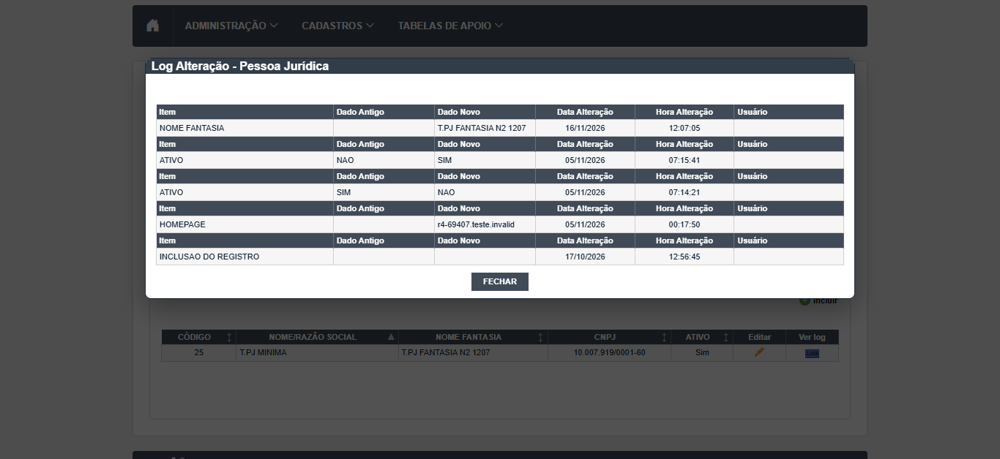
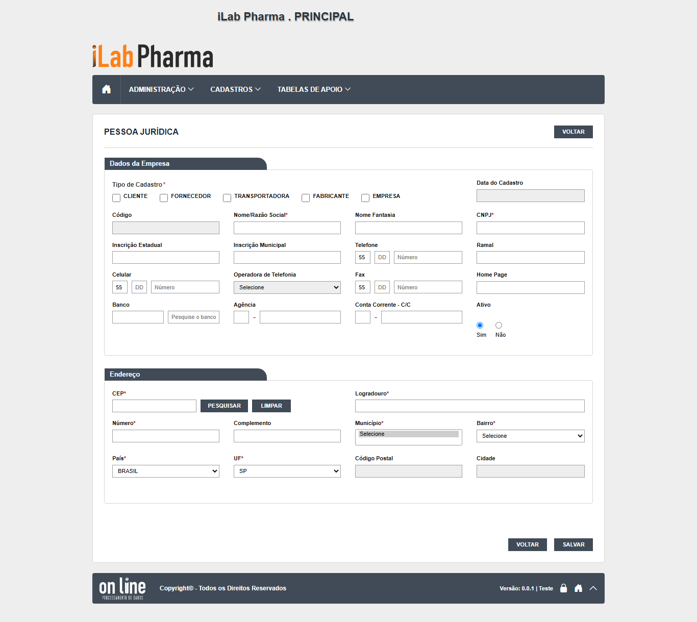
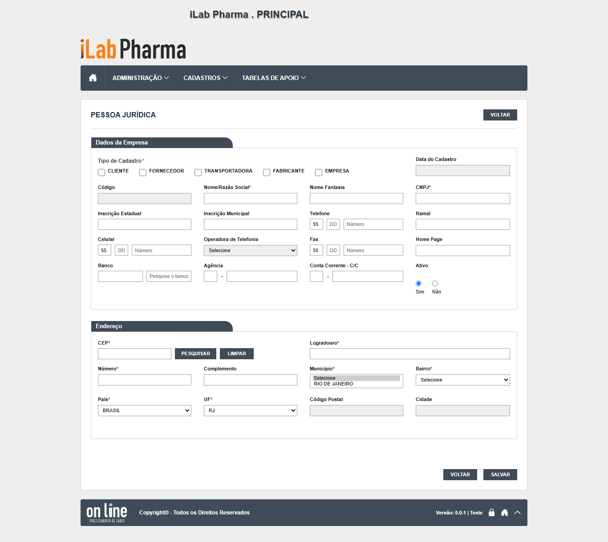

Menu: Cadastros · Situação do manual: Em ajuste (prints e conferência de 17/11/2026) · Fonte dos prints: versão nova.
Cuidados e falhas conhecidas
| Defeito | Gravidade | O que acontece, em linguagem de usuário | Revalidação |
|---|---|---|---|
| DV-PRI-N-014 | Alta | O histórico da empresa não mostra quem fez a alteração (coluna Usuário vazia, inclusive nas linhas de contato). O legado mostrava. | Repete em 16 e 17/11/2026 (print 24) |
| DV-PRI-N-041 | Média | Inativar uma empresa que é fabricante de um utensílio ou equipamento é aceito sem aviso; o item fica sem fabricante e não salva. | Não revalidado em 17/11/2026: o robô não criou item vinculado (última: 09/11/2026, com equipamento) |
| DV-PRI-N-052 | Baixa | Só o Rio de Janeiro tem municípios; a UF SP não oferece nenhum; só há dois países e duas UF (com país ARGENTINA a lista de UF continua RJ e SP). O cadastro de empresas de outras UF não se completa. | Repete em 16 e 17/11/2026 |
| DV-PRI-N-003 | Média | Mensagens de CNPJ ("CNPJ invalido.", "CNPJ ja cadastrado!") somem em cerca de 4 segundos e vêm sem acento; as de espaços repetidos e de CEP também vêm sem acento. | Repete em 17/11/2026 (prints 04 e 05) |
| DV-PRI-N-009 | Baixa | A pesquisa não ignora acento: "ACHE" acha 1 empresa e "ACHÉ" acha 3; por CNPJ acha. | Repete em 17/11/2026 |
| DV-PRI-N-028 | Média | O PDF traz "SUA LOGO AQUI". | Repete em 17/11/2026 (print 26) |
| DV-PRI-013 (do legado) | Média | Alterar a empresa não pede justificativa. | Persiste |
Candidato a defeito (rascunho R2B-04, a promover): depois do erro de CNPJ a pergunta de confirmação continua aberta. Gravidade Baixa (clareza ao usuário, Guia 33/2020). Ao salvar com CNPJ inválido ou repetido e responder SIM, a faixa "CNPJ invalido." (ou "CNPJ ja cadastrado!") some em cerca de 4 segundos e a pergunta "Confirma a inclusão do item?" fica aberta por cima; é preciso clicar NÃO. Esperado: a pergunta fecha e a mensagem fica visível até o usuário corrigir. Evidência: prints PNR2-pessoa-juridica-04 e 05 (ver passo 5).
Candidato a defeito (rascunho R2B-05, a promover): o histórico não registra a filial. Gravidade Média (trilha de auditoria, RDC 658/2022; a confirmar com a Qualidade). Ao gravar uma empresa Cliente com um contato e uma filial, o histórico traz "Contato novo incluido", mas não a inclusão da filial, e a justificativa da inativação não é gravada; a coluna Usuário continua vazia (DV-PRI-N-014). Evidência: print PNR2-pessoa-juridica-24-historico (passo 10).
Dúvida (baixa): logo depois de gravar, o CNPJ aparece sem máscara (57140839000142) e, ao reabrir pela lista, com máscara.
Dúvida: o Excel traz uma linha por contato (a empresa com 2 contatos aparece 2 vezes) e cabeçalhos e valores sem acento ("Razao Social", "NAO"). Falta decidir com a área se isso é o esperado.
Ponto para validar (CEP): o botão PESQUISAR do CEP respondeu "CEP nao encontrado." para o CEP 20040002 e para o 99999999, e não preencheu o endereço em nenhum teste. O mesmo comportamento está no candidato R2A-PRO-02 da tela Profissional; aqui ainda não há CEP de teste que preencha.
Evidência do DV-PRI-N-014 (16/11/2026), depois de alterar o nome fantasia:

A imagem mostra as cinco linhas do histórico da empresa "T.PJ MINIMA" (NOME FANTASIA, ATIVO NAO para SIM, ATIVO SIM para NAO, HOMEPAGE e INCLUSAO DO REGISTRO) e a coluna Usuário vazia em todas, inclusive na alteração feita no próprio dia.
Evidência do DV-PRI-N-052, UF SP sem municípios:

A imagem mostra o formulário com UF SP: a caixa Município mostra só "Selecione".
Evidência do DV-PRI-N-052, escolhendo o Rio de Janeiro:

A imagem mostra o País BRASIL, a UF RJ e, na caixa Município, a opção "RIO DE JANEIRO".
Corrigido na revalidação de 16/11/2026: nada nesta tela. Melhorias que já valiam antes: inativar passou a exigir justificativa, e o CNPJ é validado.
Diferenças em relação ao legado
Classe, segundo o resumo da versão nova (11-cadastros-pessoa-juridica-resumo.md), as fichas e a conferência de 17/11/2026:
| Caso | O que a versão nova faz | Classe |
|---|---|---|
| CT-PRI-090 Incluir só obrigatórios e completo | Gravam; a tela fica na edição, com Contatos e Filiais liberados | Igual |
| CT-PRI-091 Obrigatórios e formatos | Mensagens por campo (10); CNPJ inválido e repetido recusados; letras no CNPJ são descartadas pela máscara, sem mensagem | Igual (DV-PRI-N-003, N-016 citados no resumo) |
| CT-PRI-092 Alterar e histórico | Sem justificativa (como o legado); coluna Usuário em branco | Regressão (DV-PRI-N-014; o legado mostrava o usuário) |
| CT-PRI-093 Inativar | Exige justificativa; some de Fabricante e Fornecedor | Melhoria |
| CT-PRI-094 e 095 Excluir | A tela não tem Excluir (o legado também não) | Bloqueado |
| CT-PRI-096 Pesquisa | Sem acento não acha; por CNPJ acha | Igual (DV-PRI-008) |
| CT-PRI-097 Excel e Imprimir | Excel e PDF respeitam o filtro; o Excel traz uma linha por contato; o PDF traz "SUA LOGO AQUI" | Igual (dúvida: uma linha por contato) |
| Contatos e Filiais | Existem na versão nova: Cliente tem Filiais; Fornecedor só Contatos | Igual |
| Espaços repetidos | Mensagens sem acento e com texto próprio ("...no campo Nome/Razao Social.") | Diferente do legado ("Não é possível inserir espaços em branco repetidos na Razão Social!") |
| DV-PRI-N-052 Municípios | Só RJ tem municípios | Novo |
| DV-PRI-N-041 Inativar em uso | Aceito sem aviso | Novo |
Prints que faltam
Em 17/11/2026 o robô percorreu o passo a passo e refez os prints. Falta só:
| Passo ou estado | O que mostrar | Por quê |
|---|---|---|
| Planilha do Excel (X) | As colunas e as linhas do arquivo (uma linha por contato, cabeçalhos sem acento) | O arquivo gerado não foi anexado; o resultado está só em texto |
| Faixa "Filial salva com sucesso!" e filial com espaços repetidos | A faixa e a mensagem | Sem print dedicado; filiais não testadas para espaços repetidos |
| Tipo Empresa com o quadro Filiais | Se o tipo Empresa mostra Filiais, como o Cliente | Não foi possível: só Cliente e Fornecedor foram testados |
| Inativar empresa em uso (DV-PRI-N-041) | O item que usa a empresa como fabricante, antes e depois | Não foi possível: não havia item vinculado criado |
| País diferente do Brasil | A empresa com ARGENTINA, sem CNPJ | Não foi possível: nenhuma empresa com ARGENTINA foi gravada |
| Banco (autocompletar), operadora e telefones | Os campos preenchidos | Não foi possível: fora do passo a passo; não preenchidos |
| CEP que preenche o endereço | O endereço preenchido pelo botão PESQUISAR | Não foi possível: nenhum CEP testado preencheu o endereço |
| Inclusão da filial no histórico | A linha da filial | Não existe: o histórico não registra a filial (R2B-05) |